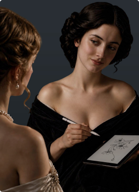
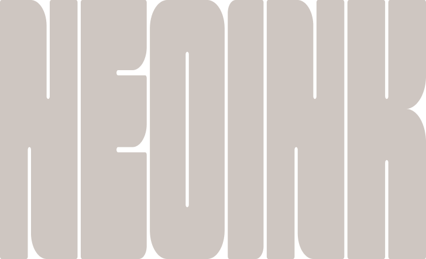
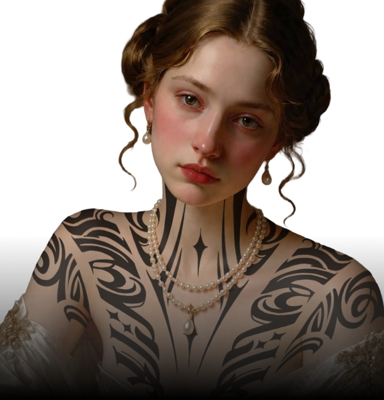
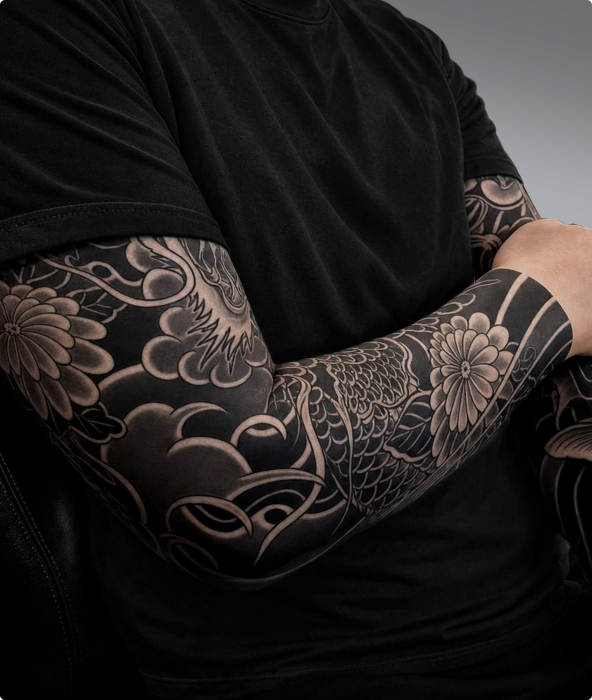
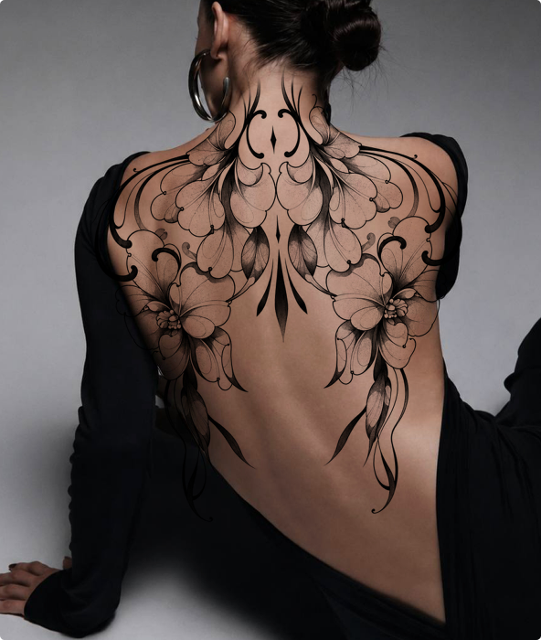
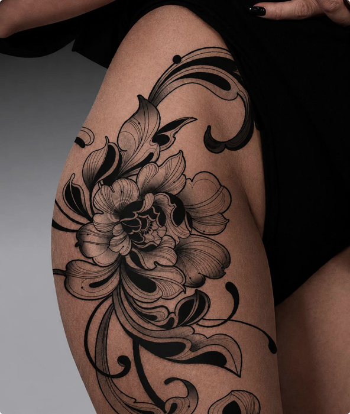
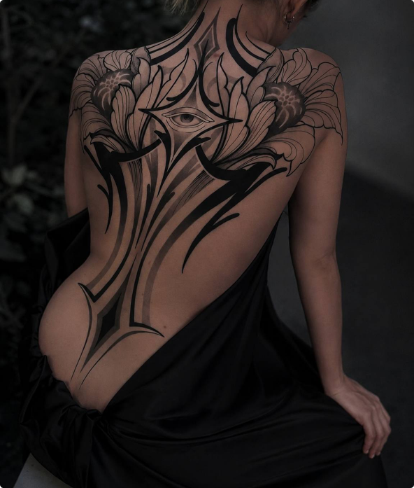
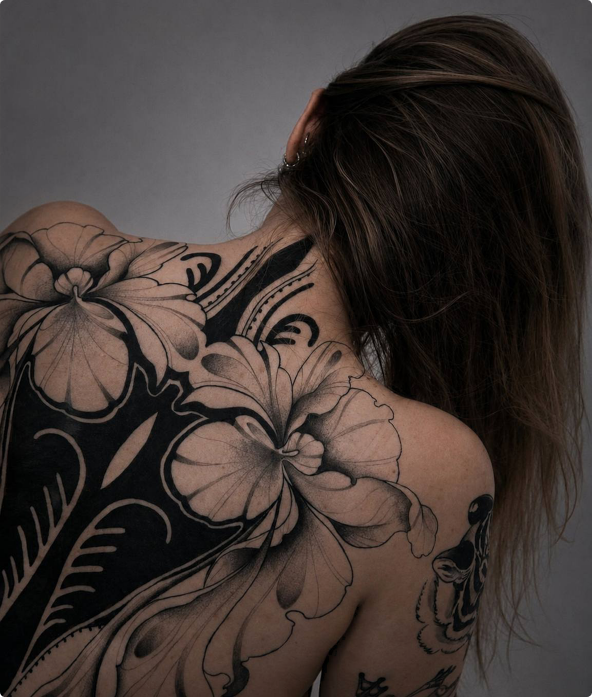
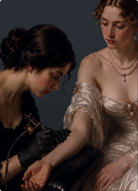
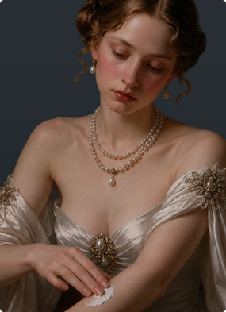

Консультация
Обсуждаем вашу идею, место, размер и детали будущей татуировки. Отвечаем на вопросы и определяем направление работы.



Тату-студия в Иваново
Татуировки по авторским эскизам.
В Neo Ink мы создаём татуировки по индивидуальным эскизам и внимательно относимся к каждой детали. Здесь часть наших работ в разных стилях и масштабах.
Все работы




От первой идеи до готовой татуировки - понятный процесс без лишней суеты. Обсудим задумку, подготовим эскиз, сделаем татуировку и расскажем, как правильно за ней ухаживать.

Обсуждаем вашу идею, место, размер и детали будущей татуировки. Отвечаем на вопросы и определяем направление работы.
Создаём индивидуальный эскиз с учётом вашей идеи, анатомии и выбранного места.

Переносим эскиз на кожу и начинаем работу.
В процессе внимательно следим за каждой деталью.

После сеанса подробно рассказываем, как ухаживать за татуировкой в период заживления.


Очень долго выбирала студию. Пришел со своей идеей и несколькими референсами, а мастер помог собрать всё в один эскиз и адаптировать его под выбранное место. Отдельно понравилось, что меня не торопили с решением. В итоге получилось даже лучше, чем я представлял. Обязательно вернусь ещё.


Пришёл с довольно сырой задумкой — примерно понимал, что хочу, но готового эскиза не было. Мастер внимательно выслушал, предложил несколько вариантов композиции и нарисовал индивидуальный эскиз. На сеансе всё прошло спокойно и комфортно, постоянно спрашивали о самочувствии.


Это уже не первая моя татуировка, поэтому для меня особенно важны качество работы и отношение мастера. В студии мне понравилось всё, от первого общения до рекомендаций по заживлению. В студии приятная спокойная атмосфера, всё чисто и аккуратно. Татуировка зажила отлично, а линии остались такими же чёткими.


 КОНТАКТЫ
КОНТАКТЫ